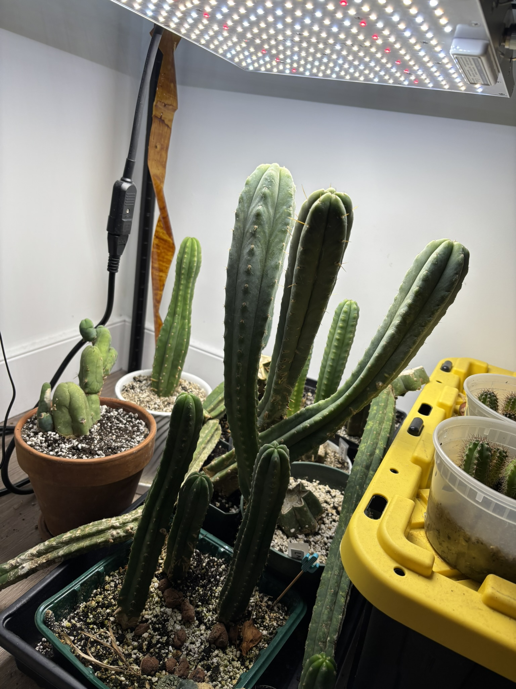
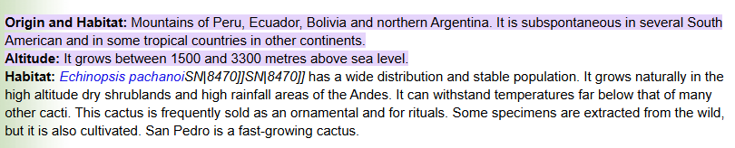
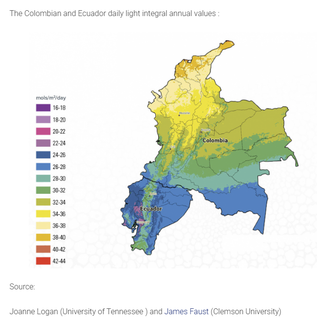
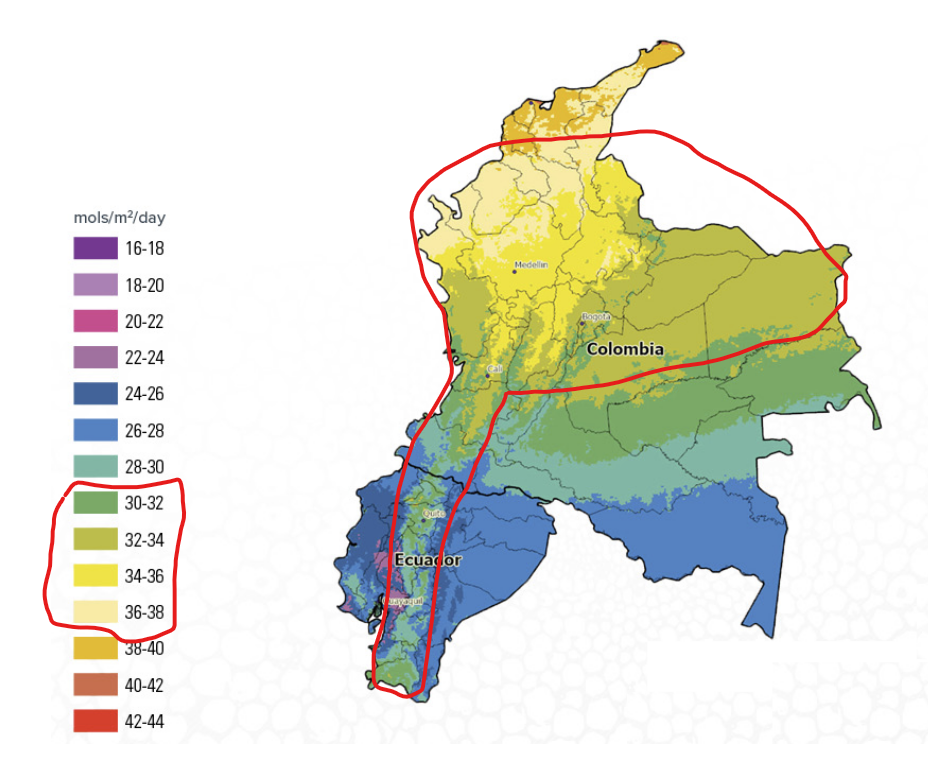
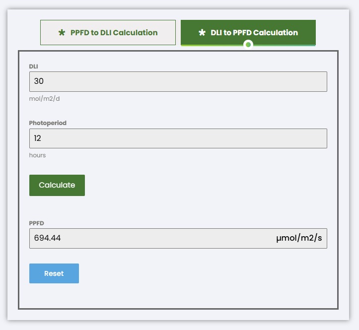
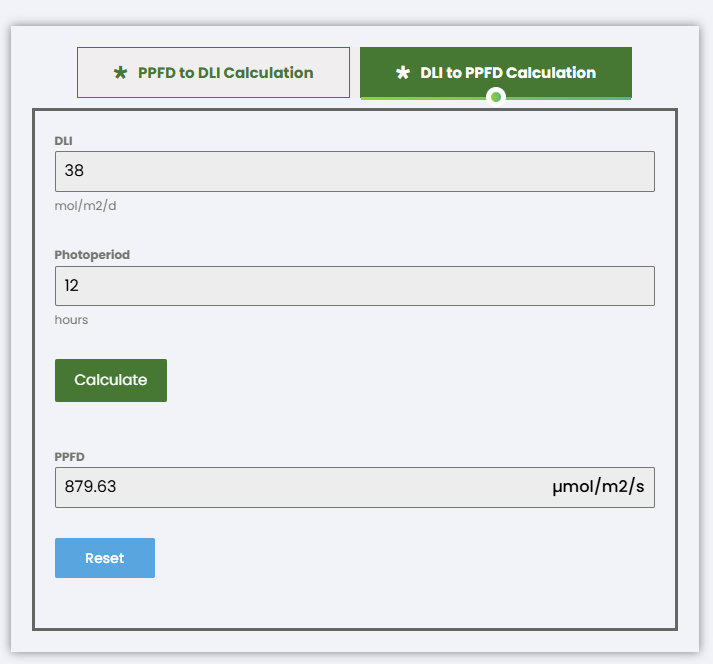
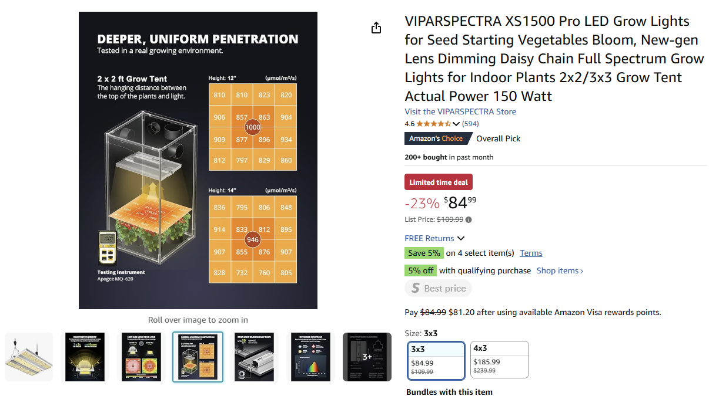
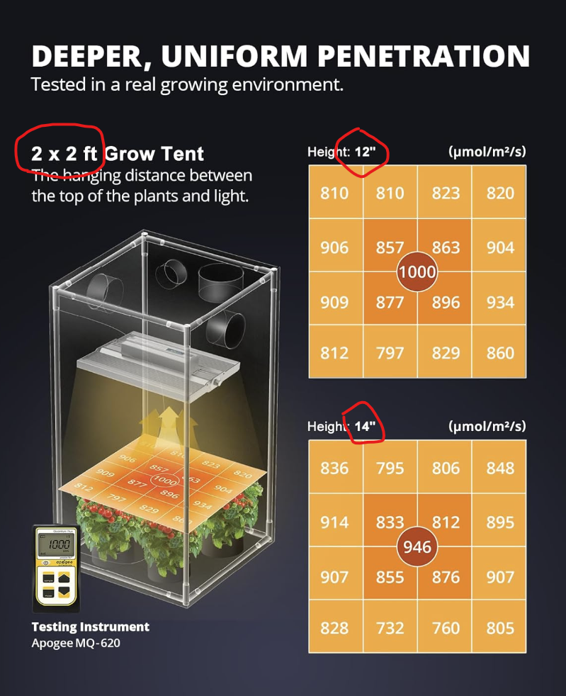
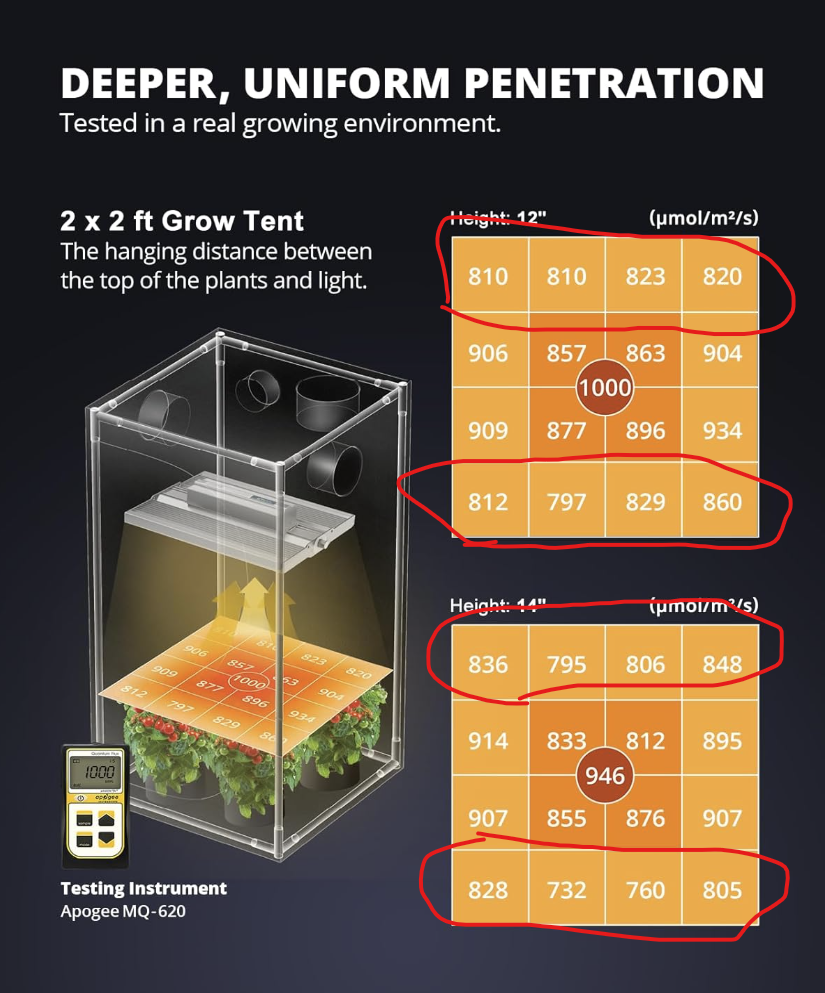

I have a small collection of cacti in my New York City apartment. It isn't warm or sunny enough here to grow cacti outdoors, so I've had to grow them indoors, which means a grow light is necessary to keep the cacti happy.
But which grow light? When shopping for one, I decided to avoid buying the first thing on Amazon or checking Reddit for recommendations. Instead, I choose to start with the plant.
What is the plant and how much sun does it need?
Before we even think about grow lights, our first goal should be figuring out how much sun the plant needs.
I mostly own a species of cacti called Trichocereus pachanoi (colloquially known as "San Pedro"). To figure out how much sun the species needs, we need to find its habitat. Some quick research shows that San Pedro is native to Ecuador, Peru, and Colombia, specifically the mountainous region.
Now, we need to find the daily light integral (DLI) of those regions. DLI measures the amount of photosynthetically active photons per day, or how much plant-usable sunlight hits the ground. With another quick search on Google, we can find the DLI values on a map:
However, don't forget we're looking for the mountainous regions. Looking at the map, we can say that 30-38 mols/m^2/day is a good starting point.
Converting DLI to PPFD
Why is DLI even useful in the first place? We can convert it to photosynthetic photon flux density (PPFD). PPFD is how grow light intensity is measured, and is usually published on grow light product pages.
Before we calculate the PPFD, we'll need to come up with the photoperiod. You can think about it as "how long do I want my grow light on a day?", but don't forget that the shorter the photoperiod, the more intense the light will have to be. I chose 12 hours.
Now, let's convert the 30-38 DLI to PPFD using an online calculator.
 Now that we have our PPFD value range of 700-880, we now know what to look for when we shop for grow lights!
Buying a grow light using PPFD
When looking for a grow light online, the manufacturer should have a PPFD chart in the listing:
If you don't see this chart, don't buy!
There are a couple things to look out for. We need to note how much of an area this grow light covers, and how far above our plants we should mount the grow light. All these are noted in the image.
Looking at the PPFD values in the chart, our plants would be happy for the most part, but they might not get enough light if we put them in the outer areas:
We can look for another grow light with higher PPFD values, but there are tricks we can do for less optimal grow lights.
First, we can recalculate the PPFD values with a longer photoperiod, which should result in a lower PPFD requirement.
We can also "increase" light output by mounting the grow light closer to the plant. Be careful as this also reduces the effective grow area, and you may accidentally add too much light due to the inverse-square law.
Putting it all together
Now all we have to do buy the grow light and follow all the information we gathered. In this case, we'll have our plants in a 2x2 foot area, mount the grow light 12 inches above the plants, and have the grow light on for 12 hours a day. However, we did see that plants on the outer areas may be a little more starved for light, so we may consider lowering the grow light to 10 inches and/or increasing photoperiod to 14 hours.
Caveats and tips
- Artifical lighting is not the same as real sunlight (e.g., UV). I'm not 100% sure of how it affects plant growth, but some manufacturers are adding UV cells to their lights and claiming it helps significantly. My recommendation is to overshoot the PPFD a bit just to be safe.
- Some grow lights have a knob that adjusts intensity. When you see a PPFD chart, assume that the knob is turned all the way to the highest intensity.
- Some manufacturers are not super honest about their PPFD ratings. You can find 3rd party tests or test the PPFD yourself using a light meter or phone app.
- Do NOT buy those stupid purple lights. They do not work.
- If your grow light doesn't come with a timer, you'll need to purchase an outlet timer
- Avoid having your grow light on for 24 hours/day. Not only will your electricity bill skyrocket, but many plants actually require periodic darkness, e.g. the CAM pathway for gas exchange.